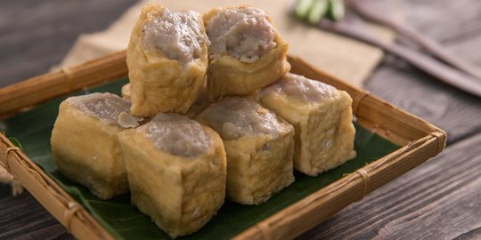

Tahu Bakso
Bahan :
| Daging ayam | 250 gram | |
| Tahu putih besar | 4 buah | |
| Telur | 1 butir | |
| Kuning Telur | 1 butir | |
| Bawang Merah | 1 siung | |
| Bawang putih | 3 siung | |
| Daun bawang | 2 tangkai | |
| Garam | 1 sdt | |
| Minyak wijen | 1 sdm | |
| Saos tiram | 1 sdm | |
| Gula | apioka5 sdm | |
| Merica bubuk | 1/4 sdt | |
| Kaldu jamur | 1 sdt |
Cara Memasak:
- Masukan seluruh bahan adonan bakso (kecuali tahu tentu, ya) ke dalam food processor lalu aduk hingga ayam lumat dan adonan tercampur rata. Bila tidak ada food processor, ayam bisa dicincang halus atau dilembutkan dengan ditumbuk.
- Catatan: telur yang digunakan adalah 1 butir telur utuh dan 1 butir kuning telurnya saja. Putih telur sisanya nanti akan digunakan di akhir sebelum proses pengukusan.
- Sementara itu, potong tahu putih menjadi delapan bagian lalu kerik bagian dalamnya dengan sendok teh, kemudian goreng hingga warna menjadi kecoklatan
- Setelah adonan bakso tercampur dan tahu siap, gunakan sendok makan untuk merekatkan adonan bakso pada bagian tahu yang kopong tadi.
- Oleskan putih telur di tiap-tiap tahu bakso sebagai perekat agar keduanya tidak lepas ketika dikukus.
- Sambil menyelesaikan adonan tahu bakso, panaskan kukusan. Tata tahu bakso agar rapi dalam kukusan dan kukus setidaknya 15 menit.
- Tahu bakso siap dihidangkan dengan cocolan saus sambal atau cabai rawit.
- Catatan : sisa adonanbisa dibuat untuk bahan dasar bakso